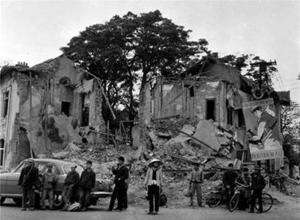
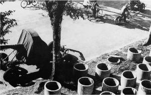
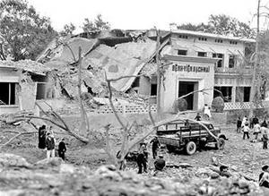
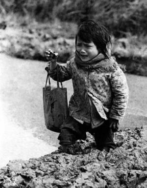
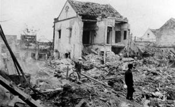

GIÁNG SINH ÁC MỘNG Ở HÀ NỘI

ới những ai sống ở Hà Nội thời chiến tranh, “Khâm Thiên” có một ý nghĩa rất đặc biệt. Đó là biểu tượng của những khổ đau và mất mát lớn lao mà dân thường phải hứng chịu trong các đợt ném bom dịp Giáng sinh 1972.
Ngày 13 tháng 12 năm 1972, hòa đàm Paris bế tắc. Washington cho rằng Hà Nội chỉ lợi dụng thời gian ngưng ném bom, vốn được coi là một kết quả của nghị trình, để tiếp tục đưa quan vào miền Nam. Tổng thống Nixon muốn chuyển tới Hà Nội một thông điệp cứng rắn để đưa người Việt Nam trở lại bàn đàm phán. Ngày 18 tháng 12 năm 1972, ông Nixon ra lệnh mở chiến dịch Linebacker II1, mà sau đó được biết tới với tên gọi “Trận oanh tạc Giáng sinh” nhằm và Hà Nội và Hải Phòng. Chiến dịch được Không lực Mỹ tiến hành cho tới ngày 29 tháng 12.

Linebacker II là một cuộc huy động máy bay lớn nhất trong lịch sử tính đến thời điểm ấy. Áp dụng chiến lược luân phiên phi công lái cùng một chiếc máy bay, Không lực Mỹ đã oanh kích cả ngày lẫn đêm. Ban ngày là máy bay cường kích chiến thuật; ban đêm là B-52 và F-111. Suốt mười một ngày của chiến dịch, một loạt mục tiêu quân sự như sân bay, trận địa pháo cao xạ và tên lửa phòng không, đường sắt, kho bãi liên tục bị không kích.Tổn thất mà đợt ném bom này gieo lên Hà Nội và Hải Phòng không chỉ dừng lại ở các mục tiêu quân sự. Một hệ quả không may của chiến tranh đó là tổn thương bên lề - tức những tổn hại rơi vào các mục tiêu không nằm trong chủ ý tấn công – luôn xuất hiện. Buổi tối 26 tháng 12, máy bay Mỹ đã gây ra tổn thương bên lề vô cùng nghiêm trọng đối với cư dân Hà Nội khi ba mươi chín quả bom rơi xuống phố Khâm Thiên.
Dù đã có lệnh sơ tán khỏi thành phố nhưng Phùng Thị Tiệm, 50 tuổi, vẫn ở lại vì bà đảm trách việc bảo vệ trị an dọc phố Khâm Thiên.
“Tất cả mọi người sơ tán khỏi thành phố theo lệnh chính quyền. Đó là ngày hôm sau lễ Giáng sinh và ai cũng nghĩ người Mỹ sẽ không ném bom vào dịp này. Nhiều người đã trở về Hà Nội để lấy thực phẩm và các vật dụng khác trước khi tới nơi sơ tán. Thế nên lúc xẩy ra vụ ném bom, phố Khâm Thiên rất đông người.
Lúc 5 giờ chiều, chính quyền thông báo máy bay Mỹ sắp ném bom. Một số người làm việc trong nhà máy ở Hà Nội đã không thể sơ tán do tính chất quan trọng của công việc.
Khi nghe còi báo động, chúng tôi lập tức chui xuống hầm trú ẩn. Còi rúc lên vào tầm 10 giờ 15 tối, lúc tôi đang ở nhà. Tôi liền chạy ra ngoài kêu gào mọi người tìm chỗ ẩn nấp. Tôi lao đi cùng chồng và đứa con trai (bảy tuổi). Tôi và nhà tôi chui xuống một hầm trú ẩn dành cho hai người còn con tôi chui vào một hầm khác. Nhiều người đào hầm trong nhà; một số người khác sử dụng hầm do chính quyền đào dọc phố”.
(Thời chiến, có ba loại hầm tại Hà Nội:
[1] Phần lớn là hầm nhỏ, hình tròn dành cho hai người được xây dựng đơn giản bằng cách đặt một ống thoát
nước bằng bê tông vào lòng đất theo chiều thẳng đứng. Miệng ống ngang bằng với mặt đất. Sau khi chui vào hầm, người ở trong sẽ kéo tấm bê tông dày chừng năm tới sáu phân để đậy lại. Nắp đậy có hai lỗ để người ta có thể nắm và kéo trượt qua đầu. Những lỗ này còn có chức năng thông khí. Hầm trú ẩn thường nằm cách nhau chừng mười mét dọc đường phố Hà Nội.
[2] Loại thứ hai là hầm trú ẩn hình tam giác có độ sâu chừng một mét. Phần lớn hầm hào ở những địa phương khác đều sâu hơn nhưng đất tại Hà Nội đào sâu dễ gặp nước. Đào càng sâu thì nguy cơ tường sập do ẩm ướt càng cao. Đầu tiên người ta đào một cái hầm hở cạn, sau đó dùng một dàn mái hình chữ A làm bằng tre và bùn khô chụp lên trên. Mỗi đường phố có một ít hầm kiểu này, chứa chừng mười người mỗi hầm. Loại hầm này rõ ràng không có tác dụng bảo vệ người trú ẩn trong trường hợp bom rơi trúng hoặc ngay bên cạnh, mà chỉ có thể chắn mảnh bom từ xa lia tới.
[3] Loại thứ ba là đường hào dích dắc có độ sâu tương đương hầm tam giác. Kiểu hầm này cũng có mái làm bằng tre và bùn khô. Đây là kiểu hầm chứa nhiều người nhất, có thể lên tới ba mươi người).
Không có chuyện định trước ai sẽ trú ở hầm nào. Mọi người chỉ việc nhảy ào vào căn hầm gần nhất khi có máy bay.
Bom bắt đầu rơi từ khoảng 10 giờ 45 đêm hôm đó… Khi máy bay ném bom, tôi cố gắng định vị xem bom rơi chỗ nào… Tiếng nổ mỗi lúc một gần. Một trong những quả cuối cùng rơi cách hầm tôi chừng hai – ba chục mét, thổi bay mái hầm. Ngay lúc đó, tôi đứng dậy. Thấy bụi mù trời (do nhà sập)… Sau khi bom ngớt, chúng tôi chạy tới các ngôi nhà sập hoặc những nơi có tiếng kêu… Tôi hối hả giúp chuyển người bị thương lên xe cấp cứu. Chúng tôi nghe tiếng kêu của một đôi vợ chồng già nhưng chẳng làm gì được vì một tòa nhà bốn tầng đã đổ sập lên phía trên họ. Chúng tôi cố sức tìm cách đưa họ ra nhưng đống đổ nát quá lớn. Tiếng kêu sau đó ngừng bặt. Ngày hôm sau chúng tôi thấy xác họ sau khi một chiếc máy cẩu dọn hết đống đổ nát phía trên. Rất nhiều trường hợp người bị vùi trong đống đổ nát và phải dùng tới cần cẩu mới đưa họ ra được.

“Phải ba tiếng đồng hồ sau tôi mới gặp con trai và biết nó không hề gì”. Về cảnh tàn phá ngày hôm ấy, bà Tiềm nhớ lại, “Chúng tôi không khóc được. Nước mắt khô hết rồi. Hôm đó nếu gặp một phi công Mỹ thì tôi hẳn đã giết hắn ta”.°°°
Đại tá Lê Kim, một cựu chiến binh thời đánh Pháp và là nhà báo, đã ở Hà Nội vào cái ngày phố Khâm Thiên bị ném bom. “Tôi làm việc ở tòa soạn”, ông kể. “Nhà tôi nằm cách đấy hai cây số, phía bên kia phố Khâm Thiên. Ngày nay thì đường phố đã hoàn toàn khác thời đó. Hồi chiến tranh, đó là một khu vực đông đúc và nghèo nàn với chỉ dăm ba tòa nhà cao tầng.
Vào buổi sáng và chiều đã có lệnh sơ tán. Buổi chiều, chính quyền cử nhân viên xuống xem dân chúng có chấp
hành lệnh sơ tán trước đó hay không. Lúc bấy giờ tôi cứ băn khoăn không hiểu tại sao lại có lệnh sơ tán đặc biệt như vậy. Phải tới sau chiến tranh tôi mới biết Chủ tịch Hồ Chí Minh từng dự đoán sẽ có các cuộc oanh kích Hà Nội bằng máy bay B-52 trong nỗ lực cuối cùng để kết thúc chiến tranh. Hồ Chủ tịch thậm chí còn đề nghị Đại tướng Giáp đưa tất cả pháo cao xạ và tên lửa phòng không từ khu phi quân sự (về bố trí tại Hà Nội) để bắn B-52 – nhưng ông Giáp không muốn để các đơn vị bộ đội không có gì bảo vệ.
Nhà tôi là giáo viên. Bà ấy và hai con sơ tán trong khi tôi ở lại làm việc … rồi trở về nhà. Chỉ có tôi và đứa cháu trai ở nhà. Vào buổi tối, máy bay B-52 ném bom Hà Nội và Đông Anh cách đấy mười ba cây số, nơi vợ con tôi vừa sơ tán tới, dù không có mục tiêu quân sự nào ở đó.
Đợt ném bom kéo dài nhiều ngày. Trong đêm đầu tiên, một máy bay B-52 bị bắn rơi và viên phi công bị bắt. Ngày hôm sau, tôi tới gặp phi công. Tôi hỏi tên, anh ta trả lời là Richard Johnson. Chúng tôi dẫn anh ta đi dọc các con phố bị B-52 tàn phá. Anh ta nói rằng mình chỉ làm theo mệnh lệnh. Tôi cười và nói với anh ta rằng đừng băn khoăn về điều đó bởi những người gây ra tội ác này là Richard Nixon và Lyndon Johnson. Tôi nói với anh ta rằng thật là trớ trêu khi tên anh ta lại là sự kết hợp giữa tên của hai vị tổng thống kia.
Mấy ngày sau tình hình trở nên xấu đi. Là một nhà báo, thật ức khi không thể đánh trận bằng ngòi bút. Cây bút không thể nhằm bắn vào máy bay B-52, nhưng khẩu súng thì có thể. Tôi làm việc tại tòa soạn tới nửa đêm vì chúng tôi quy định hạn chót cho bài vở là 3 giờ sáng. Khi tôi đang đạp xe về nhà thì B-52 lại ập đến. Hầm trú ẩn được đào cách nhau vài mét dọc đường phố Hà Nội nên mỗi khi có máy bay là mọi người lập tức chạy tìm những căn hầm trống.
Trong những ngày đầu, nhiều nhà cửa đã bị tàn phá và có một ít thương vong. Tổn thất lớn nhất là vào ngày 26 tháng 12 năm 1972. Người ta kháo nhau rằng phi công Mỹ thờ Chúa Jesus nên sẽ không ném bom Hà Nội vào dịp Giáng sinh. Tin vào điều đó, nhiều người đã trở lại phố Khâm Thiên. Khi loa phóng thanh khuyến cáo sơ tán thì hầu hết lại cứ tiếp tục công việc của mình.
Đêm hôm đó, Hà Nội bị cúp điện; còi báo động nổi lên và đài phát thanh thông báo máy bay Mỹ ở cách Hà Nội 80 cây số, ngay sau đó là 50 cây số. Mọi người chạy đi trú. Bản tin phát thanh sau đó thông báo máy bay cách 30 cây số, không ai được ở bên ngoài và dân quân sẵn sàng chiến đấu.
(Dân quân được lệnh mang theo vũ khí và nấp trong các hầm hở để bắn máy bay tầm thấp).
Sau bản tin phát thanh cuối cùng, chúng tôi bắt đầu nghe tiếng pháo cao xạ từ xa – vài phút sau, loạt bom đầu tiên được thả xuống. Nhiều quả bom rơi cách xa cả ba chục cây số, chúng tôi vẫn nghe chấn động tại Hà Nội…
Một chốc sau, tiếng pháo cao xạ át cả tiếng bom rơi… Một chiếc B-52 bị bắn trúng và cháy rực trên bầu trời Hà Nội. Nghe tin này, nhiều đứa trẻ chui ra khỏi hầm vỗ tay. Chúng quá phấn khích đến mức vọt ra khỏi hầm giữa lúc pháo cao xạ đang bắn.
Sau đó, tôi nghe tiếng bom nhưng không nghĩ rằng phố Khâm Thiên bị đánh. Tôi nhảy lên xe đạp cùng một người bạn tới tận nơi chứng kiến. Đường phố bị bom xới tung nên chúng tôi không thể vào trong. Một phía khu phố bị phá hủy nghiêm trọng, phía còn lại bị ít hơn. Khói bao phủ khắp nơi. Ngày hôm sau, không khí trở nên hôi hám vô cùng và tiếp tục như vậy trong bốn ngày, do thi thể đang phân hủy.

Chiến thuật ném bom rải thảm diễn ra dồn dập, từ Bệnh viện Bạch Mai tới phố Khâm Thiên. Đợt ném bom thật kinh khủng… Kham Thiên là phố đông đúc nhất Hà Nội. Nó nằm cách xa các cơ sở quân sự nên dân chúng tin rằng ở đấy an toàn… nhưng rồi chúng tôi tổn thất nặng nề nhất lại là ở nơi đây…Nhiều máy bay bị bắn rơi và phi công bị bắt. Viên phi công cuối cùng mà tôi gặp là Harry Ewell, người đã bị Phạm Tuân bắn rơi. (Đại tá Kim không chắc lắm về tên họ của phi công. Tôi cũng không tìm thấy tên họ “Ewell” nào trong cơ sở dữ liệu tù binh). Tôi đã chứng kiến cuộc đối thoại giữa Harry Ewell và Phạm Tuân sau khi Ewell bị bắt. Hai người khá đối lập nhau – Phạm Tuân là một chàng trai trẻ độc thân; Harry Ewell lớn tuổi hơn, đã có vợ và bảy đứa con. Bất chấp hoàn cảnh lúc bấy giờ, cuộc gặp giữa hai người đàn ông không hề hằn học… Tên của Harry Ewell làm tôi nhớ tới một vị tổng thống, ông Harry Truman, người đã ra lệnh ném bom nguyên tử xuống Nhật Bản. Nhờ sự trùng hợp với tên của các vị tổng thống mà đến nay tôi vẫn còn nhớ tên những viên phi công ấy”.
°°°
Ông Nguyễn Văn Tùng, 46 tuổi, có sáu con trai và hai con gái. Con trai lớn nhất của ông là Nguyễn Văn Giang, 26 tuổi, đã có bốn năm quân ngũ, chiến đấu tại Khe Sanh và lái xe tải tiếp vận dọc Đường mòn Hồ Chí Minh. Giang giải ngũ năm 1971 sau khi bị bệnh khiến cơ thể sưng tấy. Anh được chuyển về Hà Nội sống với cha mẹ để điều trị. Sau khi về Hà Nội, Giang lập gia đình với Cao Thị Đức, 23 tuổi.
Khi sức khỏe hồi phục, Giang trở lại lái xe tải dọc Đường mòn Hồ Chí Minh, trong vai trò là thanh niên xung phong chứ không phải quân nhân. Hôm Giáng sinh năm 1972 và một phần của ngày hôm sau, Giang chất hàng lên xe để chuẩn bị cho hành trình vào buổi tối. Nhưng rồi số phận đã dẫn tới một kết cục đau đớn, chiếc xe tải sau đó đã chạy dọc Đường mòn Hồ Chí Minh – còn Giang thì không thể.
Đôi mắt ngấn lệ, ông Tùng kể về những giờ phút cuối cùng của đứa con trai.
“Con trai tôi trở về nhà ngủ (để lấy sức cho chuyến đi)”, ông giải thích. “Nhà tôi, hai đứa con gái và hai đứa con trai thì đã đi sơ tán”.
Ông Tùng, vợ của Giang và ba con trai còn lại của ông ở lại cùng nhau trong ngôi nhà giữa lúc Giang nằm ngủ. Khi còi báo động nổi lên, Giang cùng mọi người chạy đi trú bom. Tới lúc quan sát thấy Giang và con dâu, cũng như ba người con trai kia đã an toàn, ông Tùng mới chui vào hầm. Ông thấy ba người con trai chui vào một hầm trú nhỏ, còn Giang cùng với vợ nhảy vào đường hầm dích dắc; bản thân ông cũng chui được vào một căn hầm.
“Tôi ở một mình trong căn hầm dành cho hai người”, ông hồi tưởng. “Máy bay thả bom cấp tập chung quanh, khiến căn hầm sập một phần. Bùn đất và mảnh vỡ rơi đầy người tôi. Khi bom ngớt, tôi không thể đẩy nắp hầm để ra ngoài. Nhưng tôi biết có các đội chuyên trách đi khắp thành phố sau mỗi trận bom để cứu người. Lúc khoảng 3 giờ sáng ngày hôm sau, có một người chọc gậy qua cái lỗ ở hầm tôi để xem còn ai bên trong không. Tôi nắm lấy đầu gậy để anh ta biết có người. Họ liền tìm cách đẩy nắp và phải xoay vần cơ thể tôi để lôi ra. Mất khoảng mười lăm phút họ mới kéo tôi ra được”.
Khi ông Tùng vừa được kéo ra, đã có mặt ba người con trai ở đấy. Họ bảo rằng không thấy vợ chồng Giang ở đâu. Ông Tùng nhìn về phía căn hầm nơi Giang cùng vợ đã chui vào. Ông kinh hãi khi thấy nó đã bị phá hủy hoàn toàn.
“Có tới hai hố bom, một hố ngay trên nóc hầm. Tôi cùng ba người con tìm kiếm dấu vết của những người trú ẩn trong hầm đó. Nhưng chả tìm được gì”.
Ông Tùng và các con tiếp tục tìm kiếm xung quanh và phát hiện ra một điều khủng khiếp. “Tôi bắt gặp một thi thể nằm cách căn hầm mà Giang đã nấp chừng một trăm thước”, ông Tùng kể. “Dù khuôn mặt người chết đã bị phá nát nhưng qua vóc dáng và chiếc đồng hồ trên tay tôi có thể nhận ra con mình”.
“Chúng tôi mang thi thể nó về nhà, liệm vào trong quan tài do chính quyền cấp và sau đó đưa đi an táng”.
Thi thể người con dâu của ông – cũng như phần lớn những người trú ẩn trong căn hầm đó – đến nay vẫn chưa được tìm thấy; sức nổ của hai quả bom đã nghiền nát và thổi bay xương thịt họ. Người ta nói rằng có tới hai mươi bảy người trong căn hầm vào thời điểm nó bị trúng bom.
Điều đau đớn hơn nữa đối với ông Tùng là người con dâu đã có thai sáu tháng, sắp sinh đứa cháu đầu tiên cho ông. Một ngày cuối tháng 12 năm 1972, Đặng Ngọc Long, 26 tuổi, đứng bên bậu cửa trên phố Hàng Ngang, quận Hoàn Kiếm ở Hà Nội, lặng lẽ ngắm nhìn khung cảnh đường phố.
“Tôi thấy mọi người hối hả sơ tán. Nơi đây trở thành thành phố ma khi có tới 80% dân rời đi. Lần sơ tán này lớn hơn các lần trước, vốn nhiều nhất thì chỉ có 30% người lánh nạn. Hôm đó trời rất lạnh. Thật là buồn khi thấy mọi người ra đi. Người Việt vốn luôn gắn mình với cội rễ, thường muốn gắn bó lâu dài với nơi mình chôn nhau cắt rốn. Giờ thì mọi người phải khăn gói ra đi. Tôi buồn – nhưng cũng rất tự hào. Tôi biết rằng họ ra đi để tìm sự sống – để duy trì giống nòi. Các gia đình khi rời thành phố thường được tách ra để giảm nguy cơ tổn thất; ai cũng buồn và lo lắng trước cảnh chia ly này”.
Khu vực nơi Long sinh sống không bị đánh bom, nhưng cô thường xuyên lo lắng cho người bà con và bạn bè sống trong nơi bị oanh tạc. “Anh chị em và cha mẹ tôi sống ở nhiều nơi trong thành phố và cả những vùng xung quanh”, Long giải thích. “Nếu biết có vụ ném bom trong phạm vi cách xa 30 cây số, tôi luôn hướng mắt nhìn về phía người thân đang sống và rất lo cho sự an nguy của họ”.
Chính phủ khuyến cáo tất cả dân cư nếu không có việc cần kíp phải ở lại thì hãy rời khỏi thành phố. Chỉ những người tham gia vào công tác bảo vệ Thủ đô hoặc các dịch vụ duy trì sự hoạt động của thành phố thì được chỉ đạo ở lại.
Những cuộc sơ tán diễn ra liên tục. Khi Long nhìn xuống đường phố, cô thấy từng đoàn dân di tản, với xe đạp chất đầy đồ đạc, hối hả rời thành phố.
Long cùng chồng, dù không thuộc diện cần thiết phải ở lại, vẫn quyết định không di tản. Họ đã cũng nhau hứng chịu những đợt bom khủng khiếp kể từ khi các đợt không kích thành phố bắt đầu.
“Lần đầu thấy máy bay ném bom, chúng tôi rất hãi”, Long nhớ lại. “Nhưng dần dà rồi cũng quen. Nhiều người quen với tiếng bom tới mức lúc máy bay xuất hiện họ cũng không thèm xuống hầm trú. Hồi đó ngày nào cũng nghe còi báo động. Lượng bom ném xuống mỗi ngày mỗi khác nhau. Ngày thì rất nhiều, ngày thì rất ít; đôi khi có báo động giả mà không có cuộc ném bom nào.
Giai đoạn 1970-1971, người ta đào hầm tròn dành cho hai tới ba người dọc đường phố Hà Nội”, Long kể. “Hình ảnh những chiếc hầm đã truyền cảm hứng tới việc nấu nướng của chúng tôi. Hồi đó học sinh không có đủ gạo ăn nên chúng tôi tận dụng bột mì ẩm để làm bánh cho các em. Loại bánh này có hình dáng giống hệt chiếc (nắp) hầm hình tròn”.
Những cư dân ở lại Hà Nội phải chấp hành lệnh trú ẩn mỗi khi có báo động. Có lẽ đây là cách duy nhất để họ biểu thị sự bất khuất trước người Mỹ, nhưng trong suốt cuộc chiến, Long và chồng chưa bao giờ trú ẩn dưới hầm. Họ luôn ở trong nhà, phó mặc mọi chuyện cho số phận.
Long và chồng luôn gắn bó với nơi chôn nhau cắt rốn – một truyền thống mà họ muốn con cái sẽ tiếp nối. Cặp vợ chồng trẻ vừa mới kết hôn vào Giáng sinh năm 1971. Vào lúc diễn ra chiến dịch không kích, Long đã mang thai đứa con đầu lòng được chín tháng. Tuy nhiên, điều đó cũng không khiến cô phải tìm hầm trú ẩn mỗi khi bị máy bay ném bom.
Ngày Giáng sinh 1972, có một khoảng thời gian tạm ngưng ném bom khiến nhiều người dân lầm tưởng, dẫn đến mất cảnh giác. Nhiều cư dân đã di tản trước đây kéo nhau trở lại thành phố sau khi Tổng thống Nixon tuyên bố có thể ngưng ném bom trong ngày Giáng sinh. Dân Hà Nội cho rằng thời gian ngưng ném bom có thể kéo dài tới hôm sau. Suy đoán này đã dẫn tới tổn thất lớn về sinh mạng.
Phần lớn những người trở về vào ngày 26 tháng 12 là dân di tản trẻ tuổi. Hành trình quay lại thành phố quá khó khăn đối với người quá già hoặc quá trẻ. Vì thế, những ai sung sức phải lãnh trách nhiệm trở về Hà Nội để lấy thêm thực phẩm và các vật dụng khác cũng như kiểm tra lại nhà cửa.
“Tôi không thể diễn tả hết được tất cả những chịu đựng, hy sinh ấy”, Long nói. “Làm sao có thể sống trong cảnh nguy nan như thế được? Bởi vì chúng tôi đầy lòng tự trọng nên phải tự bươn chải để sinh tồn. Thiếu đủ thứ, thiếu thực phẩm, điện và rất nhiều nhu yếu phẩm khác. Đối với dân nông thôn thì tình hình còn tệ hơn vì họ không có được những tiện nghi như người Hà Nội. Chúng tôi sống với nỗi lo sợ, mong ngóng người thân yêu được an toàn. Chúng tôi không chỉ thiếu vật chất mà còn chịu tổn thương tinh thần. Số thanh niên di tản phải đi bộ cả trăm cây số để trở về thành phố. Khi họ tới nơi, đường phố đã bị tàn phá; rất khó để đi lại nơi này nơi kia. Nhưng mọi người vẫn sát cánh bên nhau để sinh tồn”.
Đầu ngày 26 tháng 12, Long bắt đầu cảm thấy đau bụng. Tới 5 giờ chiều, cô nhận thấy rằng mình sắp sinh. Người chồng giúp vợ ngồi lên yên sau xe đạp. Trong khi chồng hối hả đạp xe thì Long tìm cách giữ thăng bằng, bụng quặn đau.
Người chồng đưa Long tới Bệnh xá Ngô Quyền. Đây không phải là bệnh viện chính mà chỉ là một cơ sở tạm thời dành cho sản khoa. Vào giai đoạn máy bay gia tăng ném bom, người ta đã quyết định phân tán các bộ phận y tế từ bệnh viện trung tâm ra nhiều nơi khác nhau để tránh nguy cơ bị mất toàn bộ bệnh viện một khi bom dội trúng. Các cơ sở này được đặt khắp thành phố.
Bệnh xá Ngô Quyền bao gồm một ngôi nhà trệt với một phòng sinh và phòng bệnh nhân. Khu vực chăm sóc sản phụ được thiết kế đặc biệt dưới lòng đất – nơi mà Long sẽ phải làm quen trước khi lâm bồn.
Không được phép ở lại với vợ, người chồng phải trở về nhà hồi hộp ngóng tin đứa con sắp chào đời, để lại Long cho bác sĩ và hai y tá ở bệnh xá chăm sóc. Ban đầu Long được đưa vào một căn phòng cùng với năm phụ nữ khác – và một số trẻ sơ sinh tương ứng. Số sản phụ và trẻ sơ sinh ở đây gợi cho Long hiểu rằng tất cả những người này đã mẹ tròn con vuông, đang hồi sức và chờ ngày xuất viện cùng với đứa con mới chào đời.
Nằm ở khu vực nổi, Long cảm thấy bụng quặn lên. Trong cơn đau đớn, cô cũng thấy may mắn khi mấy đứa bé sơ sinh xung quanh không quấy khóc. Sau một cơn đau kế tiếp, cô liếc nhìn đồng hồ treo tường. Đã 8 giờ tối.
Giữa lúc Long chuẩn bị đối mặt với cơn đau kế tiếp, không khí yên tĩnh bị phá vỡ. Tiếng cói báo động rúc lên. Điện ở Bệnh xá Ngô Quyền – và trên toàn thành phố - liền bị cúp. Khi các y tá châm đèn dầu lên, cũng là lúc Long cảm thấy sinh linh bé nhỏ trong cơ thể cô đang tìm cách chui ra. Lúc 8 giờ 15 tối, cô sinh một bé trai khỏe mạnh nặng 3,1 ký.
Ca sinh nở này là một trải nghiệm đầy đau đớn cho cả mẹ lẫn con. Cửa âm đạo của Long bị rách, xuất huyết rất nặng.
Một y tá bảo rằng cần phải khâu vết rách cửa mình, nhưng không có thuốc tê. Thêm vào đó, chỉ khâu tự tiêu và kim khâu y tế cũng thiếu, thế nên người ta buộc phải lấy kim và chỉ thường để khâu.
Khi hai y tá đang thao tác, Long quan sát thấy sự đối lập rõ rệt nơi họ. Một người thì rất trẻ, có vẻ không được đào tạo bài bản; người kia, khoảng ngoài 50, đeo kính dày, tỏ ra rất kinh nghiệm.
Khi cuộc phẫu thuật đang tiến triển, Long thấy khó chịu do người y tá lớn tuổi mắt kém, đặc biệt là trong điều kiện chỉ có một ngọn đèn dầu soi sáng căn phòng. Long cảm thấy thảm họa sắp sửa xảy đến. Thật không may, nỗi lo sợ của cô là hoàn toàn có căn cứ.
Người y tá già phải căng mắt để đặt mũi khâu đúng chỗ. Tuy nhiên, chỉ sau một hoặc hai mũi khâu, bà nhận ra rằng nơi đây thiếu ánh sáng nên bà gọi cô y tá trẻ kia tới giúp sức.
“Dù không hề khóc trong suốt ca sinh nở”, Long nhớ lại, “nhưng lúc bấy giờ, mỗi khi cảm thấy mũi kim xuyên qua cơ thể, tôi lại kêu gào lên trong đau đớn. Cả phòng đều nghe tiếng gào của tôi. Những phụ nữ khác tỏ ra rất lo lắng và hồi hộp. Tôi cảm thấy mũi kim xuyên qua thịt da, sau đó là sợi chỉ, cứ thế, lặp đi lặp lại. Sau chừng hai chục phút, với mười mũi kim xuyên qua, các y tá bảo tôi rằng cần phải khâu lại vì các mũi khâu kia đã sai”.
Ca phẫu thuật này là nhằm khâu lại vết rách ở môi bé và môi lớn nằm về cả hai phía âm đạo. Nhưng do thiếu ánh sáng, các y tá đã khâu môi lớn bên trái với môi bé bên phải âm đạo lại với nhau. Do đó, cần phải rút chỉ ra, điều này khiến vết thương ra máu nhiều hơn. Sau khi rút hết chỉ khâu, hai y tá bắt đầu lại công việc.
Điều kiện ở đó hoàn toàn bất lợi cho phẫu thuật. Thiếu thốc tê, ánh sáng, thời tiết giá lạnh, còi báo động rúc lên từng chặp và tiếng loa phóng thanh liên hồi thông báo về cự ly máy bay ném bom đang tiến về thành phố - tất cả những thứ này khiến cho một ca tiểu phẫu đơn giản trở nên cực kỳ phức tạp.
Khi tiến trình tái phẫu bắt đầu, Long lại liên hồi thét lên trong đau đớn. Sau hơn hai mươi mũi kim nữa, các y tá cuối cùng thông báo ca phẫu thuật đã kết thúc thành công. Tuy nhiên, sau đó các biến chứng đã phát sinh nhanh chóng. Quanh các vết rách đã xuất hiện sưng tấy. Để ngăn ngừa nhiễm trùng, một y tá đã dùng khăn nhúng nước sôi, vắt khô rồi áp vào. Nước quá nóng nên người ta phải dùng kẹp để gắp khăn ra. Nữ y tá tiếp tục dùng khăn nhúng nước nóng áp lên khu vực sưng tấy nơi âm hộ. Mỗi lần như thế là bệnh nhân lại gào lên vì đau đớn.
“Cách làm này thậm chí còn gây đau đớn hơn cả việc phẫu thuật khâu vết rách”, Long cho biết.
Phẫu thuật xong, cô được chuyển tới nằm nghỉ trên bàn.
“Lúc bấy giờ tôi mệt lả, nghĩ rằng có thể nằm nghỉ ở đây một lúc. Nhưng ngay sau đó thì còi báo động lại nổi lên và tôi được chuyển xuống hầm. Bình thường, tôi có thể được nằm dưỡng sức ở trên mặt đất – nhưng cuộc tấn công sắp xảy ra đã khước từ của tôi tiện nghi giản dị đó”.
Người ta đã đào một hệ thống hầm ngầm ngay dưới bệnh xá phụ sản để sử dụng trong trường hợp khẩn cấp. Một cái lỗ được khoét ngay trên sàn nhà làm cửa ra vào, vị trí lỗ nằm góc phòng. Người ta khoét vào lòng đất để làm bậc tam cấp. Cửa chỉ cho phép một người chui qua mỗi lần. Nhờ ánh đèn lờ mờ từ căn phòng phía trên hắt xuống, Long cố sức tự đi xuống hầm. Mỗi bước đi là một trải nghiệm đau đớn, dư âm của ca phẫu thuật ban nãy.
“Để tránh hai đùi cọ xát vào nhau, tôi dạng hai chân bước đi như con gấu”, Long nhớ lại.
Các bậc tam cấp dẫn xuống độ sâu chừng 1,5 mét. Khi xuống tới bên dưới, Long thấy mình đang đứng trong một “hầm cóc” hở. Từ giữa hầm, cô thấy bốn hầm chui tỏa ra theo bốn hướng – đủ dài cho một người chui vào. Miệng mỗi hầm cao chừng tám tấc, nằm cách sàn hầm chính một khoảng cách ngang đầu gối. Kiểu hầm này rõ ràng đóng chức năng như một phòng sinh trong trường hợp có máy bay ném bom. Các hầm được bố trí cho phép y tá ở ngay giữa tâm hầm cóc có thể xoay quanh 360 độ để chăm sóc cho bất cứ ai trong bốn thai phụ đang lâm bồn xung quanh.
Loại hầm này được thiết kế để mang những sinh linh bé bỏng vào đời trong điều kiện cực kỳ khắc nghiệt, nhưng Long lại có cái nhìn khác.
“Ở đó rất lạnh”, cô nói. “Trong hầm rất thiếu ôxy. Bốn hầm khoét xung quanh gợi cho tôi liên tưởng tới cái chết nhiều hơn là sự sống. Mỗi hầm giống như một quan tài chứ không phải phòng sinh”.
Trước khi chui vào hốc của mình, Long thấy hai trong số ba hốc xung quanh đều đã có người. Một sản phụ, cũng vừa sinh xong trong ngày, đang nằm dưỡng sức ở một hốc; hốc còn lại là bốn trẻ sơ sinh quấn chăn nằm ngủ chung trong một cái hộp, trong đó có con trai của cô. Lúc 9 giờ 45 tối, Long đã nằm gọn trong hốc của mình, mắt nhìn lên trần bằng đất chỉ cách mặt cô vài phân.
“Tôi nằm xuống và lắng im nghe ngóng”, cô kể. “Tôi nghe tiếng bom rơi và đất rung lên. Bụi và đá sỏi rơi đầy mặt. Tôi sợ rằng đất sẽ sụp xuống, vùi lấp tôi và con. Ngột ngạt và cực kỳ khó chịu. Lưng đau, âm hộ đau, chân tê cóng đi vì giá rét, tôi nằm trên tấm chiếu mỏng trải lên nền đất cứng. Ở đó rất ẩm ướt. Tôi chẳng thể ngủ được. Tôi gần như mê man. Thỉnh thoảng y tá lại đến để kiểm tra tình hình. Con trai tôi bắt đầu gào khóc như còi báo động. Trận ném bom đêm ấy là khủng khiếp nhất tại Hà Nội từ trước tới nay. Đó cũng là đêm kinh hoàng nhất trong cuộc đời tôi”.
Dù bom ngưng vào lúc chừng 11 giờ 30 tối, Long vẫn chưa được rời hầm. Cô phải ở đấy tới 7 giờ sáng hôm sau, giấc ngủ cứ chập chờn. Buổi sáng, cô được đưa lên mặt đất và đặt trên giường. Do vẫn còn đau đớn nên cô phải ở lại bệnh viện hai ngày hai đêm nữa.
Trong thời gian nằm viện còn lại, Long tiếp tục nghe còi báo động thường xuyên. Mỗi khi còi rúc lên, cô lập tức bồng con và đi kiểu chân gấu một cách thuần thục xuống hầm trú ẩn. Quy định của bệnh viện là những sản phụ như Long phải lưu lại ít nhất bốn ngày. Nhưng không thể chịu được điều kiện tại đây, chỉ sau hai ngày, cô đã ký giấy cam đoan xuất viện. Sau đó cô nhắn chồng tới đưa về.
Người chồng từng dùng xe đạp để chở bà vợ mang thai tới bệnh viện, nhưng sau khi gia đình có thêm một thành viên nữa thì cần phải có một phương tiện chuyên chở khác. Anh kiếm một chiếc xích lô đạp tới bệnh viện. (Xích lô là loại xe chở thuê phổ biến ở Việt Nam. Đó là loại phương tiện lai giữa xe đạp và xe ba gác, có một ghế ngồi kiểu xe ba gác, với hai bánh trước và phía sau là một nửa chiếc xe đạp. Người lái ngồi trên yên xe, ngay đằng sau ghế ba gác, để đạp và điều khiển xe).
Những sự kiện đêm đó đã hằn nhiều vết sẹo lên cơ thể và tâm hồn của Long cùng đứa con trai. Phải mất sáu năm sau Long mới nguôi ngoai cảm giác đau đớn, tâm lý lo sợ mà cô đã trải qua trong cái đêm tháng 12 năm đó, cũng như cô mới đủ can đảm để có đứa con thứ hai.
Đối với cậu con trai, Quân, vấn đề còn trầm trọng hơn. Thực tế khắc nghiệt của một đất nước chịu chiến tranh đã giáng lên đầu cậu ngay lúc vừa chào đời. Tiếng hét của cậu đêm ấy và những đêm sau nữa trong chuỗi sự kiện ném bom dịp Giáng sinh cùng với tiếng còi báo động rúc liên hồi đã khiến người ta đặt cho cậu biệt danh Quân “còi”. Mãi tới tuổi thanh niên, Quân vẫn còn bị hội chứng mộng du, mất ngủ và lo âu. Những âm thanh bất ngờ và lớn dễ dàng khiến cậu hồi hộp. Tới hôm nay, cậu vẫn còn sợ những nơi lạnh và tối.

Có lẽ trẻ em chính là những người hứng chịu nhiều hậu quả nhất trong chiến tranh.Trần Công Tấn, một nhà báo làm việc cho Hà Nội, đã chứng kiến rất nhiều thảm kịch trong cuộc xung đột Việt Nam.
Với Tấn, khía cạnh kinh khiếp nhất của cuộc chiến đó chính là việc phải chứng kiến tác động của nó giáng lên đầu trẻ em. “Nó buộc trẻ em phải lớn thật nhanh”, ông đúc kết. “Nó khiến một đứa trẻ từ lúc còn rất nhỏ phải học bài học thực tiễn về sự sống và cái chết”.
“Tháng 12 năm 1972, Hà Nội – đặc biệt là phố Khâm Thiên ở trung tâm thành phố - đã hứng chịu mười hai ngày dội bom. Trẻ con phải nấp dưới hầm bên cạnh người giám hộ. Có lần, khi bom tạm lắng và một nhóm người trông trẻ sợ rằng đợt bom kế tiếp sẽ rơi gần nơi mình ẩn nấp nên đã quyết định chuyển trẻ con tới một địa điểm an toàn hơn.
Có cô giữ trẻ đã đặt một bé gái một tuổi xuống đất để chạy tới giúp đỡ nạn nhân bị thương. Cách đó vài thước, xác chết nằm la liệt – đó là tất cả những nạn nhân của đợt bom vừa qua sắp được chuyển tới nơi quy tập.
Đứa bé bò qua các thi thể. Có lẽ nghĩ đó là những người đang ngủ, nó dùng tay lay lay một xác chết. Không thể
đánh thức người kia, đứa bé rụt tay lại – và lúc này hai tay bé đầy máu. Trông thấy đứa trẻ đã bò đi xa, cô phụ trách chạy tới bế nó lên. Khi đó, đứa bé giơ hai bàn tay của mình về phía cô giữ trẻ. Đó là một đứa trẻ còn quá nhỏ, và nhìn khuôn mặt bé có thể thấy được tất cả. ‘Liệu nó có hiểu được những điều đang xảy ra xung quanh, làm sao có thể giải thích cho bé?’ ” – Tấn trầm ngâm.
Theo hồ sơ của chính quyền Hà Nội, đợt dội bom ở phố Khâm Thiên đã giết chết 283 thường dân, 55 trong số đó là trẻ em. Bên cạnh đó là 266 dân thường bị thương, bao gồm 31 trẻ nhỏ. Tổng cộng có 178 trẻ mồ côi. Cái chết của rất nhiều sinh linh bé nhỏ đã được ghi lại bằng phim ảnh trong hệ thống lưu trữ của Hà Nội. Một trong những bằng chứng đau lòng nhất là đoạn phim được thực hiện ngay sau trận ném bom phố Khâm Thiên.

Đoạn phim đặc tả sự tàn phá khủng khiếp của đợt không kích. Phố Khâm Thiên chỉ còn sót lại vài ngôi nhà. Dinh thự bị nghiền nát. Khi máy quay đang tố cáo sự tàn phá, mắt người xem chợt dừng lại trước một cảnh tượng thảm khốc.Nhô ra dưới đống gạch đổ là phần thân trên của một em bé. Một cậu trai chừng chín tuổi bị đống đổ nát đè bẹp cả cơ thể bất động.
Đôi tay cậu mở rộng ra, có vẻ như đang ôm vật gì đó vào thời điểm trước khi chết. Khi máy quay tiếp tục lướt qua, người ta đã biết được cậu bé đang cố làm gì vào thời khắc cuối cùng trong cuộc đời ngắn ngủi ấy. Trên mặt đất, cách đôi tay cậu bé chừng nửa mét là một chiếc lồng chim bị dập nát. Trong khi các khối bê tông đổ xuống đã giết chết cậu bé, thì hai con chim yến nhỏ vẫn còn sống trong khoảng lồng còn lại.
Nỗ lực cuối cùng của cậu bé là một hành động của yêu thương – cố sức cứu sống hai chú chim yến nhỏ.
Bên cạnh thương vong, tổn thất về tài sản cũng rất lớn. Các hồ sơ ghi nhận 533 ngôi nhà bị phá hủy hoàn toàn và
1.200 ngôi nhà hư hại nặng.
Cư dân phố Khâm Thiên khẳng định không có một mục tiêu quân sự đáng kể nào tại khu vực này trong thời điểm ném bom – mục tiêu khả dĩ gần nhất đó là nhà ga xe lửa cách đấy hơn 200 mét. Nhưng ngày cả nhà ga ấy cũng đã bị bom phá hủy năm ngày trước đó rồi.
Sau bao mất mát ấy, rất nhiều người dân Khâm Thiên sống sót đã tha thứ cho những phi công Mỹ thực hiện cuộc ném bom. Họ không tin rằng bi kịch của họ là kết quả của một hành động chủ ý từ những kẻ tấn công mà là, như một nạn nhân đã diễn tả giản dị, “đó là một tai nạn không may trong một cuộc chiến không may”.
1. Theo tư liệu của phía Mỹ, tổng cộng 207 chiếc B-52 và 2.000 máy bay chiến thuật đã tham gia chiến dịch Linebacker II, từ ngày 18 đến 29-12-1972.